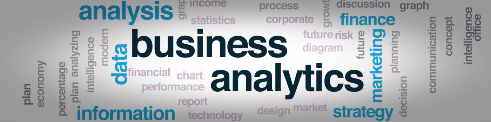

Key Accomplishments

GenAI Center of Excellence
Co-founded and scaled the GenAI Center of Excellence from 5 to 500+ members within a year, developing a Rapid Prototyping Operating Model that reduced solution delivery time by 75%.
View Details
Enterprise AI Strategy
Led a portfolio of 3 enterprise-focused AI/ML strategic projects that identified critical path risks and implemented mitigation strategies that prevented a 3-month delay and $500K in costs.
View Details
Digital Transformation
Orchestrated critical workstreams for major digital transformation initiatives using Agile methodologies, translating corporate goals into 80+ prioritized backlog items.
View Details